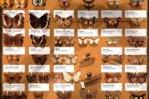

The Bridge: Verbs

Verbs are, in Halliday's view:
Our most
powerful impression of experience
(Halliday 1994, An introduction to
functional grammar: 2nd edition. London: Edward Arnold p106)
It is not surprising, therefore, that most learners perceive the
ability to handle verbs in English as a major priority, and they are
right to do so.
Unfortunately, verbs are also quite difficult.
On most initial training courses, a session or even two is devoted to understanding verbs in some way but such sessions, because of the nature of introductory courses, tend to mix up the analysis of verbs with tenses, voice and aspects and that can obscure things that are important about verbs in their own right.
This short guide will not consider tenses and aspects at all but will look at the three main ways of analysing verbs and, in passing, consider some of the teaching implications.
|  |
Classification by type |
This is the usual way to start the analysis. There are three main types (one of which consists of two subtypes).
- Lexical or main verbs
These are probably what most learners and teachers think of when asked to give an example of a verb. Here are some examples:
She travelled to Paris
I work in Berlin
The clock stopped
They leave on Sunday
Peter explained the problem
I cried
The lion ate him
and so on.
Lexical or main verbs come in a variety of flavours as we shall shortly see but they have two characteristics in common:- They carry meaning even when standing alone so, for
example:
Stop
communicates an obvious meaning without any context or co-text. - They inflect for tense and person (in English) so we can
have:
She arrived
I chose the blue dress
Peter talks too much
etc.
with endings and alterations (underlined) to show person and tense.
- They carry meaning even when standing alone so, for
example:
- Auxiliary verbs
These verbs are of two sorts and, standing alone in this role without any context or co-text, they carry no meaning:- Primary auxiliary verbs operate to affect the grammar of
what we say so for example:
I have arrived
I got the work done
Do you understand?
The house was repaired
In these cases respectively, the verbs act to:
change the aspect of the verb arrive
alter the sense of who is the subject of the verb do
make a question
change the voice (from active to passive) - Modal auxiliary verbs express how the speaker / writer
sees an event. So, for example, we may have:
She should be here soon
I must get this finished
I dared not ask
I need to speak to you
I could help
etc.
In these cases respectively, the verbs act to:
express the speaker's opinion of the desirability or likelihood of something being true
express an imposed obligation
express the speaker's attitude to the verb ask
express the speaker's understanding of the necessity for something to occur
express the speaker's ability to do something
The clue is in the name of these: they express modality of one kind or another. Modality simply describes the way something is perceived or done.
- Primary auxiliary verbs operate to affect the grammar of
what we say so for example:
- Copular verbs
These verbs link the subject to the attribute (i.e., a characteristic, often an adjective) or equivalent noun, so, for example, we see:
That tastes awful
She is the boss
He appears upset
I am getting old
They became doctors
She was an MP
etc.
In these cases, respectively, the verbs act to:
link the subject, this, to the adjective which describes it, awful
link the subject, she, to another way of expressing the same thing, the boss
link the subject, he, to the adjective which describes it, upset
link the subject, I, to the adjective, old, in a way that shows development through time
link the subject, they, to the thing that the subject changed into, dosctors
link the subject, she, to the thing that the subject was, an MP
In all these cases, the second noun or noun phrase is not the object of the verb. It is the complement of the verb.
These verbs, too, need co-text to communicate so expressions like:
*This tastes
*She is
*I am getting
*They became
*She was
are fundamentally meaningless.
Moral #1: make it clear to learners what kind of verb they are dealing with.
Overlap |
Some verbs may operate in more than one category. For example:
- He
appeared at the door
is a lexical or main verb meaning come into view, but
He appeared intelligent
is a copular verb linking he with the attribute intelligent - I
dared an interruption
is a lexical or main verb meaning take a risk, but
I dared not ask a question
is a modal auxiliary verb meaning have the courage to - I
did it
is a lexical or main verb meaning accomplish (and many other things)
Did you get the answer
is an auxiliary verb forming a question - I
had flu
is a lexical or main verb meaning suffer from, but
I had the doctor call
is a causative verb.
The fact that some verbs appear in more than one category means that teachers need to be alert to their grammatical function and do not needlessly confuse learners.
 |
To make sure you have this clear before we go on, try a short matching test. |
 |
Classification by structure |
The most obvious distinction here is the first in the list that follows but there is one other that is important.
- Transitivity
is a fundamental concept and verbs vary across languages in this respect. Verbs in English are also variable and some can fall into all three of these categories with variations in meaning, usually.- Intransitive verbs do not have an object so, for example:
She arrived at six
I spoke up
They complained
We walked
are all intransitive uses of the verbs (although speak and walk can also fall into the next category)
In these examples, and in these meanings, the verbs cannot be used with an object so we do not allow:
*She arrived the hotel
*I spoke the boss
*They complained the room
*We walked the house - Monotransitive verbs take a single direct object, for example:
They spent the money
She lost her wallet
I told a lie
I gave the explanation
are all monotransitive uses of the verbs (although the fourth may fall into the next category).
In these examples, the objects are:
the money
her wallet
a lie
the explanation - Ditransitive verbs take two objects. Usually, the indirect object (the
beneficiary) comes before the direct object (the thing or person
affected). For example:
She told me a lie
I gave the man the cash
I offered him the work
She left David the house and all her money
are all ditransitive (although all of them may be monotransitive and the last, with a different meaning, can be intransitive).
In these examples, the two object are:
Direct Indirect a lie me the cash the man the work him the house and all her money David
- Intransitive verbs do not have an object so, for example:
- Catenation
Some verbs can form chains of meaning with other verbs and there are two main ways this happens although there are some variations that are explained in the guide linked below:- with the to-infinitive, for example:
I want to go to see her
I came to help to prepare for the party - with the -ing form (often called a gerund in this
case), for example:
I loathe standing in queues
I like skiing
I remember meeting her
- with the to-infinitive, for example:
The phenomenon of certain verbs being primed for certain types of grammatical structures is known in the trade as colligation and there is a guide to that, linked below.
|
|
To make sure you have this clear before we go on, try a short matching test. |
Classification by meaning: verbal processes |
This analysis is of verbal processes and falls into three parts, each containing two sub-sections.
- Doing verbs
- Material processes refer to what things do and to the external,
material world of our experience, for example:
The bridge collapsed
The fire destroyed the warehouse
etc. - Behavioural processes refer to what people do, to psychological
or physical behaviour, for example:
She laughed at the idea
Mary cried all night
They worried
- Material processes refer to what things do and to the external,
material world of our experience, for example:
- Thinking and saying verbs
- Mental processes refer to opinions and feelings, for
example:
I believe he's coming
I love sweet things
She wants more time - Verbal processes refer to what people say by bringing
the internal world to the outside, for example:
She said she would help
I explained why I was there
I asked who could help
etc.
- Mental processes refer to opinions and feelings, for
example:
- Being verbs
- Existential processes refer to something presence or
absence, for example:
There's a shop on the corner
It's a pity she is late
There appears no answer to the problem - Relational processes refer to the connections between
things and people, for example:
My office lies on the third floor
It smells like nail varnish
They are made of copper
I was at home
- Existential processes refer to something presence or
absence, for example:
|
|
To make sure you have this clear before we go on, try a short matching test. |
Implications |
There are some obvious classroom implications of which the first is probably the most important.
- Languages work very differently:
- what is a transitive verb in English may not be in other languages and vice versa
- most languages only have one way of catenating verbs
- some languages may have a different verb form altogether for transitive and intransitive meanings
- some languages will use affixes to show transitivity
- some languages will reserve a different form of the verb be for permanent and temporary states (for both or either relational processes or copular uses)
- It is not enough to explain or lead learners to the meaning
of a verb because
- some are meaningless without co-text or context
- some fall into more than one category with different meanings
- the grammar differs between verbs, even those that are close synonyms (compare, for example, hide and conceal)
- To understand how verbs work, learners need to focus or be
focused on:
- verb type (grammatical function)
- form ((ir)regularities, catenation and transitivity)
- meaning (verbal processes encoded by the verbs)
- The types of meanings that verbs encode will be appropriate
to certain types of text so it is important both for production
and comprehension that learners are primed to look for and use
certain types of processes. For example:
- Narratives will frequently require behavioural, material
and mental process verbs
For example:
I went to the cinema which was showing the film and I enjoyed it so much that I told my father about it - Explanations will require relative, material and
existential processes
For example:
The garden is very overgrown and looks terrible so it is important to get a gardener in - Expositions and discussions will involve material and
mental processes as well as modal auxiliaries
For example:
Cars cause a lot of pollution in cities and I think they should be banned - Information reports will use relational and behavioural
processes
For example:
The riot was in the city centre and the demonstrators caused a lot of damage to cars and shops
- Narratives will frequently require behavioural, material
and mental process verbs
If that's all clear enough to you, you can go on to the guides below (on the right). If you still feel slightly confused, try the links on the left.

| Guides in other areas | |
| Initial plus essential guides | In-service guides |
| verb essentials | verbal processes |
| gerunds and infinitives | verb types and clause structures |
| the infinitive essentials | finite and non-finite forms |
| modal auxiliaries one by one | the infinitive |
| copular verbs | catenative verbs |
| auxiliary verbs essentials | colligation |